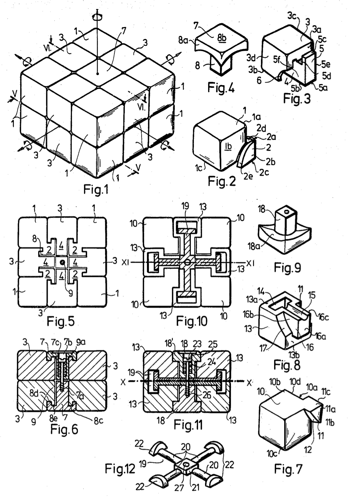

Spatial Logical Toy
- Inventor: Erno Rubik
- Assignee: Politoys Ipari Szovetkezet, Budapest, Hungary1
- Appl. No.: 289,192
- Filed: Aug. 3, 1981
Background of the Invention
The invention relates to a spatial logical toy having a total of eighteen toy elements which form a regular or an irregular spatial body, preferably an oblong body, in the assembled state.
Spatial logical toys are well known, such as that described in the HU-PS No. 170 062 of the same applicant, which relates to a spatial logical toy consisting of twenty-seven solids which form a cube in the assembled state. The toy elements, in the shape of small cubes, may be turned along the spatial axes of the cube by means of connecting elements arranged in the geometric center of the large cube.
The surfaces of the small cubes forming each surface of the large cube are colored or carry numbers, figures or any other symbols which can be assembled into the predetermined logical order of sequence by simultaneously rotating the nine toy elements forming the surfaces of the large cube.
Summary of the Invention
The logical toy2 according to the present invention represents an improved form of the previously described spatial logical toy. The construction is based on the same principles, however, the internal connection is performed by means of absolutely new and particular solids.
The key feature according to the invention, i.e. shape, name, sounds, mode of interconnection and central fixture will be described in detail by means of two preferred embodiments, by the aid of the accompanying drawings, wherein.

What is claimed is:
In a spatial logical toy assembled from a plurality of toy elements, of which a predetermined number may be rotated in the direction of the spatial axes starting from the geometrical center of the logical toy, the improvement wherein the spatial logical toy is formed by a total of eighteen toy elements.
Two sets of eight toy elements each comprise substantially cubiforms with integally formed cam elements and each of the sets comprise eight identical toy elements, and two connecting toy elements, and means for joining the connecting toy elements to coact with the cam elements to form an integrated toy body, the joining means comprising a single screw enclosed by a spring.
The spatial logical toy as claimed in claim 1, wherein the toy has the shape of a regular geometrical body in the assembled state.
The toy elements thereof belonging to one set comprise eight cubiform homologous elements each having a first cam element connected to one corner thereof.
Two confining surfaces of which lie at a unit distance from two surfaces of the cube and are parallel therewith and are cut-off in the form of an ellipsis-quarter, and a third confining surface thereof is coplanar with another surface of the cube and between the two confining faces of the first cam element running parallel with the cube and the cube there is a hollow with a convex spherical surface.